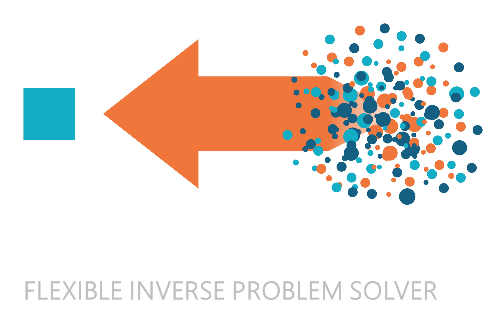

fips 0.2.0b2.dev11+ge2ea25b84#


⚠️ Beta: fips is in beta, and its API may still change between releases. The changelog says what changed. Please report any issues or edge cases you encounter.
Bridging Physics and Data#
Inverse problems in geophysics and atmospheric science often involve large state spaces, heterogeneous observation networks, and explicit matrix algebra. General-purpose optimization tools tend to make researchers strip away the labels of their data (times, places, instruments) and translate their physical models into bare arrays.
fips (Flexible Inverse Problem Solver) solves linear inverse problems without losing the labels of your data:
Everything is matched by label: every value carries a
pandasindex (time, latitude, site, …). The inputs of a problem are matched by their labels, never by position, and a label on one side only is an error that names it.Built from named blocks: a state of fluxes and offsets, observations from towers and satellites. Each block keeps its own labels, and a matrix is built block by block.
The standard linear model: observations are the forward operator times the state, plus an offset, plus an error. Plug in your forward operator (a Jacobian you computed), the prior and its covariance, and the observation covariance. Covariances are written as correlation models (exponential, Gaussian, Matérn, Kronecker products) with standard deviations.
Fast and exact: each matrix is kept in its cheapest form (dense, sparse, diagonal, or Kronecker factors), and fips computes the exact Gaussian posterior with direct linear algebra, not sampling, for large state spaces in seconds.
Installation#
pip install fips # the solver
pip install "fips[viz]" # with plot_comparison (matplotlib)
For development:
git clone https://github.com/jmineau/fips.git
cd fips
uv sync
Usage#
Estimate monthly CO₂ fluxes on a small grid from a year of tower measurements:
import numpy as np
import pandas as pd
import fips
rng = np.random.default_rng(0)
# The state: monthly fluxes on a 3 x 3 grid, labeled by (time, lat, lon)
cells = pd.MultiIndex.from_product(
[
pd.date_range("2024-01", periods=12, freq="MS"),
[40.6, 40.7, 40.8],
[-112.0, -111.9, -111.8],
],
names=["time", "lat", "lon"],
)
prior = fips.Vector.from_series(pd.Series(1.0, index=cells), block="flux")
# The observations: CO₂ (ppm) at one tower every 6 hours
times = pd.Index(pd.date_range("2024-01-01", "2024-12-31", freq="6h"), name="obs_time")
co2 = pd.Series(rng.normal(420.0, 1.0, len(times)), index=times)
obs = fips.Vector.from_series(co2, block="co2")
# The forward operator: a transport Jacobian with labeled rows and columns
jacobian = pd.DataFrame(
rng.uniform(0.0, 0.5, (len(times), len(cells))), index=times, columns=cells
)
forward = fips.Operator.from_blocks(
{("co2", "flux"): jacobian}, rows=obs.space, cols=prior.space
)
problem = fips.Problem(
prior=prior,
prior_cov=fips.Independent().with_std(0.5), # prior flux error
obs=obs,
obs_cov=fips.Independent().with_std(1.0), # model-data mismatch (ppm)
forward=forward,
offset=415.0, # the background concentration
)
post = fips.solve(problem)
print(post.estimate.to_series("flux")) # posterior fluxes, labeled by (time, lat, lon)
print(post.summary()) # DOFS, chi-squared, R², RMSE, ... in one row
The prior and the observations are Vectors, the forward operator is an Operator, the covariances are put on the labels by the Problem, and fips.solve returns the Posterior. Everything is matched by label: the Jacobian’s rows and columns could come in any order.
More in the documentation:
A first problem, step by step, with a state of two blocks.
The user guide: correlated covariances (exponential, Matérn, Kronecker products), sparse Jacobians, offsets solved for with the state, aggregated observations, and repeated inversions.
A regional flux inversion, worked from start to finish.